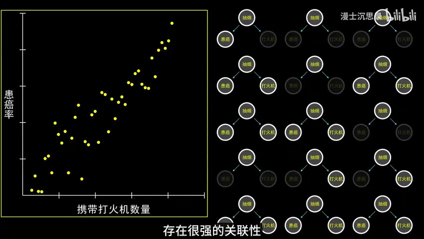

原视频 · 在线回看
点击后联网加载 B 站播放器；本地不下载整段视频。

原视频 · 在线回看
点击后联网加载 B 站播放器；本地不下载整段视频。
来源：【漫士】看完这个视频，你会质疑所有的因果关系｜UP 主：漫士沉思录｜时长：16 分 14 秒｜打开视频｜阅读强度：深度
假如我们发现，随身带打火机的人更容易患某些疾病，能不能建议大家把打火机扔掉？先别急着接受这个办法。带打火机的人可能更经常吸烟，打火机只是伴随吸烟出现的一件物品。把它扔掉之后，如果吸烟行为没有变化，我们并没有改变最需要关心的那个因素。一个物品能够提示风险，并不意味着移除这个物品就能降低相应风险。
再看一个更容易想明白的例子：天气热起来，冰淇淋销量增加，去游泳的人也多了，溺水事故数量可能随之增加。把冰淇淋销量和事故数量放在一起，可能会看到明显的共同变化。可是，限制冰淇淋销售未必会减少游泳的人数。我们看到的是两件事情一起变化，接下来需要弄清，它们到底通过什么关系连接。
这个问题的困难，在于数据可以把“经常一起发生”显示得十分清楚，却不会自动解释“为什么一起发生”。在熟悉的情境里，我们容易想到天气和吸烟；换到一个陌生行业，隐藏的共同原因可能完全不在我们的视野里。因果推理就是要把这些关系说清楚，尤其是在准备采取行动、改变结果之前。
可以用一个很简单的图来表达打火机的例子：把“吸烟”“携带打火机”“患病风险”分别看作一个节点，再从吸烟画出两条箭头。一条指向携带打火机，表示吸烟会增加携带打火工具的需要；另一条指向患病风险，表示烟草暴露会影响健康。箭头有方向，它表达我们对影响关系的判断，不能只因为两个数经常一起变化，就随手在两者之间画一条。
烟草使用会增加多种癌症风险，这一点有充分的医学依据。这里用打火机帮助理解的，是“提示某个原因的物品”与“那个原因本身”之间的区别，不需要假设一个固定的风险倍数。美国国家癌症研究所的烟草风险说明介绍了烟草暴露与癌症的关系。
这种从一个共同原因分出两条路径的结构，叫分叉结构。共同原因在分析两个结果的关系时，可能成为混杂因素。所谓混杂，就是我们本想看清两个对象之间的关系，却把另一个因素同时造成的变化算了进去。吸烟者可能更常带打火机，也可能具有更高的某些健康风险，于是即使打火机本身没有引起相应疾病，数据里仍然可能出现明显关联。
儿童的身高和阅读能力也可以帮助理解。把不同年龄的孩子放在一起看，年龄较大的孩子通常更高，也接受了更多语言和阅读训练。我们容易发现身高与阅读能力一起增加，但不能据此推出让孩子长高就能改善阅读。年龄以及随年龄变化的学习经历，是理解这组数据时需要考虑的因素。图里的箭头提醒我们去找实际过程，不能把一条统计曲线直接变成行动建议。
巧克力消费与科研奖项、出警次数与犯罪数量、某种疾病的治疗人数与死亡人数，也会出现类似的判断困难。社会经济条件、治安需求、进入医院的人数等，都可能同时改变两边的数据。它们是需要调查的解释，具体哪个因素起作用、作用有多大，还要看实际研究。能提出一个合理的共同原因，足以提醒我们暂缓因果结论，却还不足以证明这个解释已经包办了所有情况。
喝红酒与寿命、儿童听古典音乐与学习表现，尤其容易引出“照着做就会变好”的愿望。假如饮酒人群同时具有不同的收入、生活方式和医疗条件，直接比较寿命就很难把差异全部归到红酒上。同样，如果听音乐的家庭在教育投入上也不同，就需要分清家庭环境与音乐活动各自的作用。这些例子要求我们检查比较双方原本有哪些差别，不能仅凭共同出现就给出健康或教育处方。
共同原因以外，还有一种熟悉的结构：A 导致 B，B 再导致 C。火灾产生烟雾，烟雾触发报警器，就是一个简化例子。我们可以把它写成“火灾 → 烟雾 → 报警”。如果只知道发生了火灾，当然会提高对报警的预期，因为火灾可能先制造烟雾，再通过烟雾影响报警器。
现在把已知条件改变一下。假设我们已经知道报警器附近的烟雾情况，并且在这个简化模型里，报警器只根据烟雾作出反应，那么判断报警器是否响起时，火灾信息便不再提供额外帮助。烟雾来自起火还是烹饪，不会另外改变这个模型中的报警行为。中间节点已经把沿这条路径传来的信息交代清楚了，这叫给定烟雾以后，火灾与报警条件独立。
“给定”可以理解为已经知道某个条件。这个结论很容易被说得过头：现实中的报警器还可能受电源、故障、烟雾浓度和位置影响，看到一点烟也不保证一定报警。条件独立的判断只在我们采用的关系结构成立时适用。如果火灾还会烧断供电线路，影响报警器，就又多了一条路径，原来的三节点图已经不够用。图让假设变得清楚，也让我们知道结论依赖哪些简化。
因此，“多加一个控制变量”并不总能让分析更好。一个变量如果处在影响传递的中途，把它固定住，就可能挡住我们本来想观察的影响。研究火灾通过烟雾如何影响报警，与在已经知道烟雾时预测报警，是两个不同的问题。弄清自己在问哪一个，才知道应该怎样使用中间信息。
第三种结构方向正好不同：A 和 B 都指向 C。A、B 是两个原因，C 是它们可能造成的共同结果。最容易让人困惑的地方，是只挑选某种 C 的样本来分析，会改变我们看到的 A、B 之间的关系。即使 A、B 在原来的总体里没有关系，筛选之后也可能出现关联。这种结构常叫对撞结构，C 叫对撞点。
以“哪些人进入了我们的关注范围”为例。先采用一个简化假设：外貌吸引力和相处是否愉快，在总体里彼此独立；两者任何一个表现突出，都可能让一个人获得更多关注。现在只观察已经被关注的人，其中外貌吸引力相对弱的人，可能更需要通过相处愉快进入这组样本。反过来，另一些人即使较难相处，也可能凭外貌得到关注。于是，在这个筛选过的群体里，两种特点可能看起来互相抵消。
关键在于，那些两个特点都不突出、因此没有进入关注范围的人，被排除在观察之外了。我们根据一个有条件进入的群体判断所有人，便可能错误地认为外貌会改变性格。这个例子是在说明筛选能够造成什么，不能被当成关于外貌与性格的现实定律。关系的方向和强弱还取决于实际筛选机制，对撞结构也不保证每次都出现负相关。
等行李的例子能够把“知道结果后，两个解释互相影响”讲得更直观。站在行李转盘前，暂时拿不到行李，可能因为运输尚未完成，也可能因为行李已经丢失。刚开始等时，“还没有运到”是很自然的解释。等得越来越久，这个解释越来越难成立，行李丢失就变得更值得怀疑。我们始终在解释“还没拿到行李”这个已知结果；其中一个原因变得不可信，会让另一个原因获得更多重视。
这不意味着等待把行李弄丢了。等待时间改变的是我们掌握的信息，以及不同解释的可信程度。把这层关系分清，就能理解为什么“看到一个结果后，另一个原因看起来更可能”与“我改变了一个原因，所以结果发生变化”是两件需要分别回答的事。
| 简单结构 | 可以怎样理解 | 最容易误判的地方 |
|---|---|---|
| A ← B → C | 一个共同原因影响两个对象。 | 把 A、C 的共同变化当成直接影响。 |
| A → B → C | 影响经过一个中间环节传递。 | 忘记已知 B 会改变 A 还能提供什么信息。 |
| A → C ← B | 两个原因都能影响同一个结果。 | 只分析某种 C 的样本，却把筛选后的关系推广到总体。 |
这些结构以及相应的条件独立关系，是图模型的基础；具体使用时，需要检查是否还有其他连接路径。Pearl 等人的因果推断入门第 2 章给出了更完整的图示与条件。
一旦从“猜接下来会怎样”走到“我该改变什么”，因果关系就特别重要。一个模型可能很擅长利用打火机判断吸烟相关风险，却无法仅凭这种能力回答“扔掉打火机有没有用”。预测关心看到某些信息后，结果通常怎样；干预关心主动改变一项条件后，结果会怎样变化。训练数据里经常一起出现的东西，可能足以帮助预测，却不足以支持干预。
识别狼的例子说明了另一种困难。假如训练图片里的狼经常站在雪地里，模型可能把白色背景当成识别狼的方便线索。只要后来的测试图片也保持同样的背景规律，模型看起来就很准确。等一只狗出现在雪地里，或者狼出现在其他环境，模型依赖的捷径便暴露出来。它学会的关联与我们希望它识别的动物特征没有充分重合，环境一变，预测就受到影响。
这并不说明所有统计模型都只会犯同一种错误，也不能推成模型越大越差。它提醒我们，模型容量与模型究竟依据什么作判断，是两个不同的问题。更多参数可能帮助学习复杂规律，但不会自动证明某条规律就是因果机制。尤其在电网、工厂等多变量环境里，条件变化、数据选择和隐藏因素更难凭直觉看清，预测结果需要放回具体任务里理解。
LimiX 是这里讨论的一种结构化数据模型。结构化数据可以先理解为表格：每一行记录一次样本，每一列记录一个特征，例如用电量、发电量和价格。围绕这种数据训练模型，与直接生成一段自然语言的任务存在差别。LimiX 的一个研究方向，是先构造各种因果结构，再由这些结构生成合成数据，让模型在大量具有已知生成关系的任务上学习。
我们可以把这件事想成许多小型的模拟环境：先规定哪些变量影响哪些变量，再规定影响如何发生，最后按照这些规则生成一张张数据表。与拿到真实数据后猜测背后发生了什么相比，这样生成的训练任务有一个优势：设计者知道数据依照什么规则产生。模型能否把学到的规律用于真实数据，还要面对真实环境与模拟环境的差别。合成数据的来源清楚，不等于所有现实中的因果关系从此都能直接读出来。
使用时，另一项重要思路是上下文学习。面对一个新任务，给模型一批已有历史样本，再给出当前待预测的输入，模型利用这批样本中的规律作答。这里的历史样本相当于说明当前任务的数据背景，使用者不一定需要为每次任务另外训练一套模型。这是 LimiX 研究中的具体方法；它的任务范围与模型设计可继续阅读 LimiX 论文。
一个相关分析是观察模型对不同特征的注意力。注意力可以粗略理解为模型计算时对输入信息分配的权重。合成数据的因果图已知，所以研究者可以比较：模型在预测某个变量时，重点关注的变量，是否与图中具有特定关系的变量相符。这样能够观察模型如何使用输入，帮助理解它的行为。
其中涉及马尔可夫毯。沿箭头直接指向一个节点的，叫它的父节点；从这个节点直接指向的，叫它的子节点。上图里，1 和 3 指向 4，因此是 4 的父节点；4 指向 6，所以 6 是它的子节点。2 也指向 6，因此 2 是这个子节点的另一位“父节点”。这样，围绕 4 找到的相关变量是 1、3、6 和 2。
在满足相应假设、箭头不会绕一圈回到起点的因果图里，这组父节点、子节点和子节点的其他父节点，构成目标节点的马尔可夫毯。知道这组变量后，图中其余变量不再为预测目标节点提供额外信息。它回答的是“已有这些信息后，还需要看哪里”，包含的变量既可能是原因，也可能是结果，所以不能把整组都叫作直接原因。
如果注意力恰好集中在这样一组变量附近，说明模型的使用信息方式与理论结构出现了联系。这个观察仍然不能单独证明模型恢复了真实世界的因果机制：注意力权重并不等同于干预效应，真实数据还可能有未观测因素。把“与理论关系相符的观察”和“足以支持现实干预的结论”分开，才能理解这项分析具体说明了什么。
电价预测给出了一个更具体的应用场景。预测未来一天的价格时，过去价格当然是容易获得的信息，但未来用电需求、风电与光伏出力、火力发电和外来电力安排，也会影响供需。只沿着昨天的价格往后猜，可能遗漏今天已经改变的条件。比如预期用电增加时，能供应多少电、哪些电源能够补上，就会成为理解价格变化的重要背景。
这项 LimiX 应用介绍称，在其案例中，模型给历史价格的权重较低，对预计用电量、发电量和外来电力等信息更加关注；同时报告同一测试集上的误差为 5.9%，相对所比较的专用模型降低 33.7%。这些数值属于该案例报告，不能读成所有电力市场都能达到的效果，也不能把相对降低误读成降低了 33.7 个百分点。预测误差、测试期间与比较对象共同决定这组结果的意义。
即使预测结果较好，也还要分别看清几个问题：模型在什么条件下预测准确，它利用了哪些信息，以及主动改变某个因素会产生什么后果。电价预测改善，直接支持的是预测任务的表现；是否已经找到足以指导干预的完整机制，需要另外的论证。前面的因果图，正好帮助我们把这些问题拆开理解。
共同变化可能来自直接影响、共同原因、间接传递，也可能来自样本筛选。因果图把这些不同关系画出来，让我们知道正在依赖哪些假设。
预测和干预关心不同的问题。一个线索有助于预测，不等于改变这个线索就会改变结果；环境变化还可能让过去有效的线索失效。
合成因果数据、上下文学习和注意力分析各自提供了有价值的研究方向。具体预测效果与完整的因果证明应分别判断，结论需要停留在实际支持的范围内。
如果一个变量能准确提示风险，为什么还不能据此决定改变它来降低风险？
只看已经获得关注的人，可能怎样改变我们看到的外貌与性格关系？这个例子为什么需要先说明筛选条件？
模型预测更准确、注意力更符合某张图、模型能正确预测干预结果，这三项判断各自要求什么？